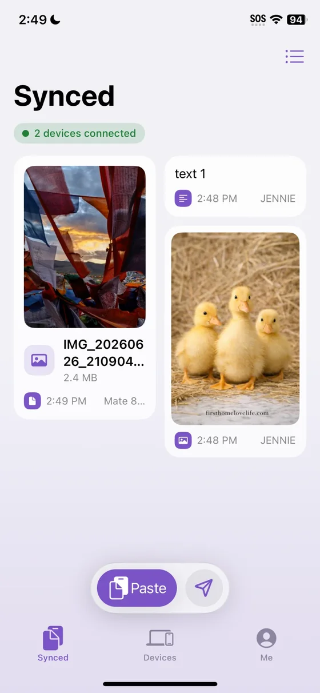
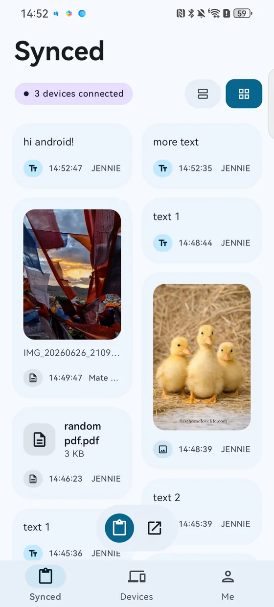
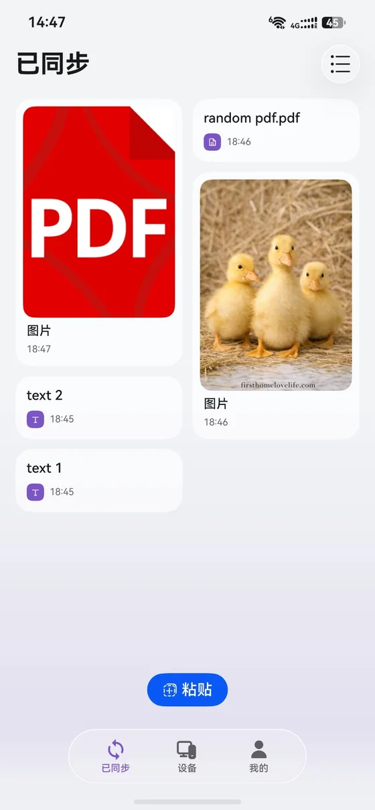

每台手机上都是同一份列表


功能
局域网直连
同一个 Wi-Fi 下的设备会自动找到对方，直接连接。
文件最大 1 GB
文字、图片和文件都能传，文件就是文件，不是链接。
最近 25 条
每台设备都有。删掉一条，所有设备上都删掉。
右键就能发
在文件资源管理器里选 Share to ClipLink，手机上用分享菜单。
鸿蒙也能连 Windows
各个版本用同一套协议。
常驻托盘
Windows 版开机自动启动，复制了就发出去。
常见问题
我的剪贴板会经过服务器吗？
不会。内容直接在配对过的设备之间传。ClipLink 唯一的对外请求是 Windows 版向 GitHub 检查更新，见隐私政策。
同一个 Wi-Fi 里的其他人能看到我复制的内容吗？
看不到。他们能看到网络里有一台 ClipLink 设备，但看不到你复制了什么。内容只会加密发给你信任的设备。
不在同一个 Wi-Fi 下能用吗？
要自动找到对方，得在同一个网络。不然可以通过 Tailscale 这类 VPN 按地址配对。
为什么手机只有在打开应用时才同步？
iOS 和鸿蒙不允许应用在后台运行，所以打开 ClipLink 时才会补上同步。Android 可以在应用里打开后台接收。Windows 版常驻托盘，一直在同步。
历史记录存在哪里？
最近 25 条和对应的文件，存在应用自己的存储里。可以删掉单条，也可以全部清空。
怎么更新 ClipLink？
Windows 版：打开 Settings，进 About，点 Download and install。手机版通过应用商店更新，或者下载新的 APK 覆盖安装。
Windows 提示“Windows 已保护你的电脑”。
测试版安装程序还没有代码签名。点“更多信息”，再点“仍要运行”。详见代码签名政策。
要收费吗？
不收费。ClipLink 以 Apache 2.0 许可证开源，代码在 GitHub 上。